Capítulo 3 Análisis de datos exploratorio
Paquetes para este capítulo
if (!require('gapminder')) install.packages('gapminder'); library('gapminder')
if (!require('hexbin')) install.packages('hexbin'); library('hexbin')
if (!require('tidyverse')) install.packages('tidyverse'); library('tidyverse')3.1 Visualizando distribuciones
3.1.1 Variables categóricas

## # A tibble: 5 x 2
## continent n
## <fct> <int>
## 1 Africa 624
## 2 Americas 300
## 3 Asia 396
## 4 Europe 360
## 5 Oceania 243.1.2 Variables continuas
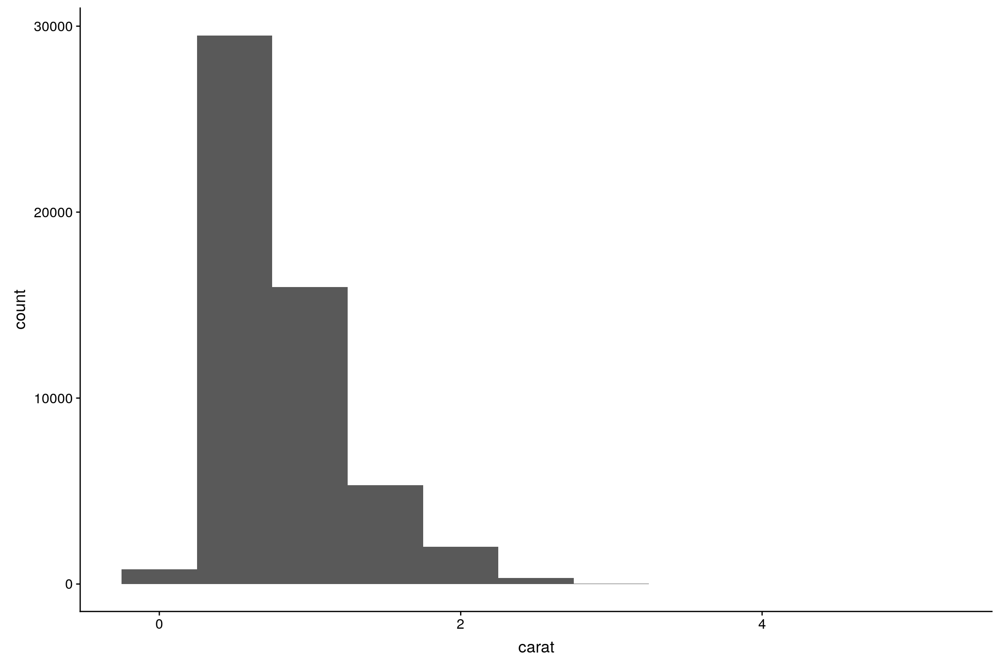
## # A tibble: 1,626 x 2
## lifeExp n
## <dbl> <int>
## 1 23.6 1
## 2 28.8 1
## 3 30 1
## 4 30.0 1
## 5 30.3 1
## 6 30.3 1
## 7 31.2 1
## 8 31.3 1
## 9 31.6 1
## 10 32.0 1
## # … with 1,616 more rows## # A tibble: 7 x 2
## `cut_width(lifeExp, 10)` n
## <fct> <int>
## 1 [15,25] 1
## 2 (25,35] 32
## 3 (35,45] 273
## 4 (45,55] 348
## 5 (55,65] 329
## 6 (65,75] 548
## 7 (75,85] 173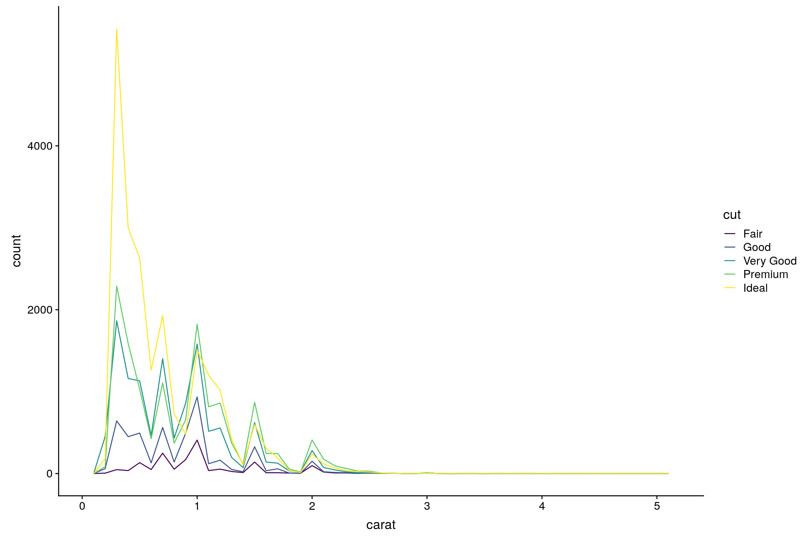
3.1.3 Ejercicio variables individuales
Usando el DF mpg, visualiza la distribucion de las variables manufacturer, class, trans, hwy y cty
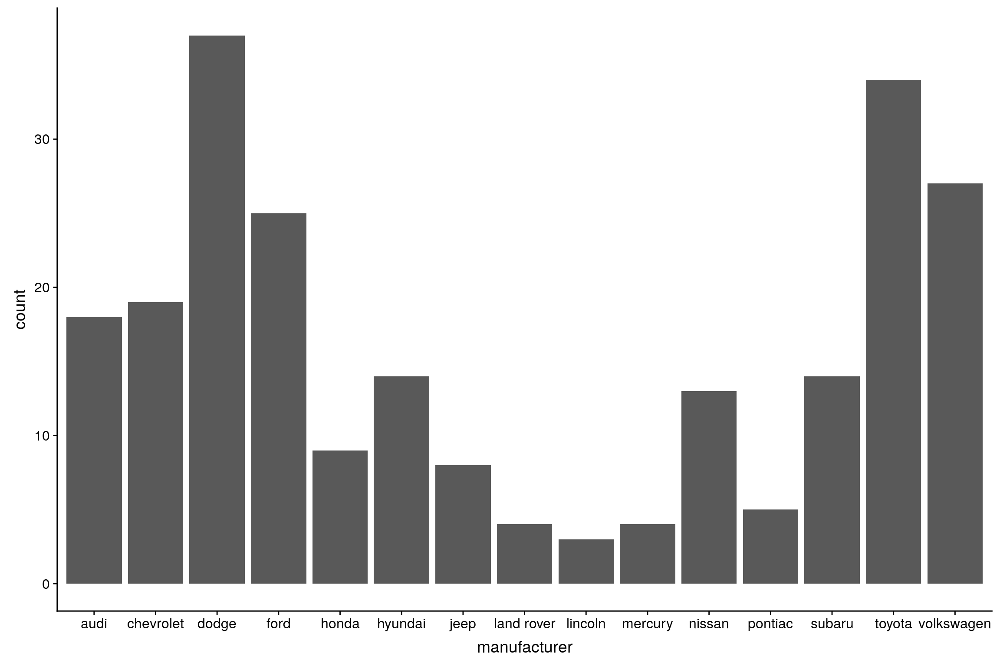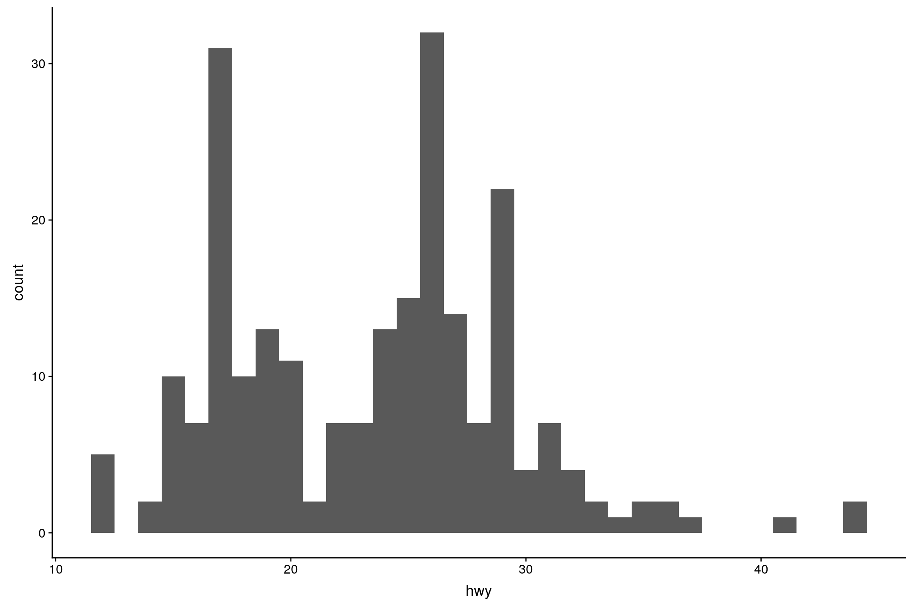
3.1.4 Visualizando datasets completos
Cuando nos llega una nueva base de datos, una de las primeras cosas que haremos será familiarizarnos con los datos. Cómo se distribuyen, cual es la relación entre distintas variables, etc.
if (!require('dplyr')) install.packages('dplyr'); library('dplyr')
if (!require('tidyr')) install.packages('tidyr'); library('tidyr')
if (!require('ggplot2')) install.packages('ggplot2'); library('ggplot2')
# Wide to long
d <- gather(gapminder) %>%
filter(value != 999) %>% # Si existiera algun codigo para missing values, filtrar
mutate(value_NUM = as.numeric(value))
# Plot numeric variables
d %>%
drop_na(value_NUM) %>%
ggplot(aes(value_NUM)) +
facet_wrap(~ key, scales = "free") +
geom_histogram(bins = 15) #+ scale_x_log10()
# Plot non-numeric variables
d %>%
drop_na(value) %>%
filter(is.na(value_NUM)) %>%
ggplot(aes(value)) +
facet_wrap(~ key, scales = "free") +
geom_bar() +
coord_flip()
3.1.4.1 inspectdf
if (!require('gapminder')) install.packages('gapminder'); library('gapminder')
if (!require('inspectdf')) install.packages('inspectdf'); library('inspectdf')
if (!require('dplyr')) install.packages('dplyr'); library('dplyr')
if (!require('ggplot2')) install.packages('ggplot2'); library('ggplot2')
gapminder %>% inspect_na## # A tibble: 6 x 3
## col_name cnt pcnt
## <chr> <int> <dbl>
## 1 country 0 0
## 2 continent 0 0
## 3 year 0 0
## 4 lifeExp 0 0
## 5 pop 0 0
## 6 gdpPercap 0 0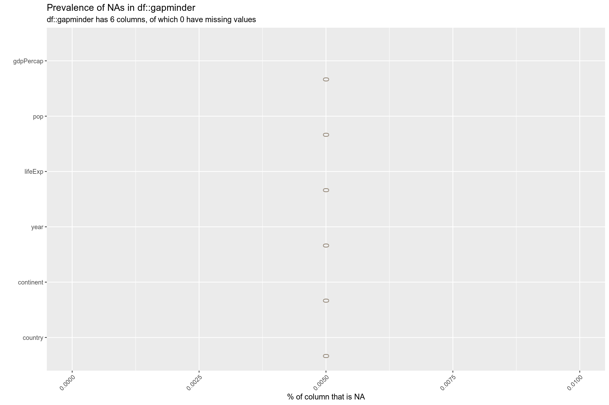

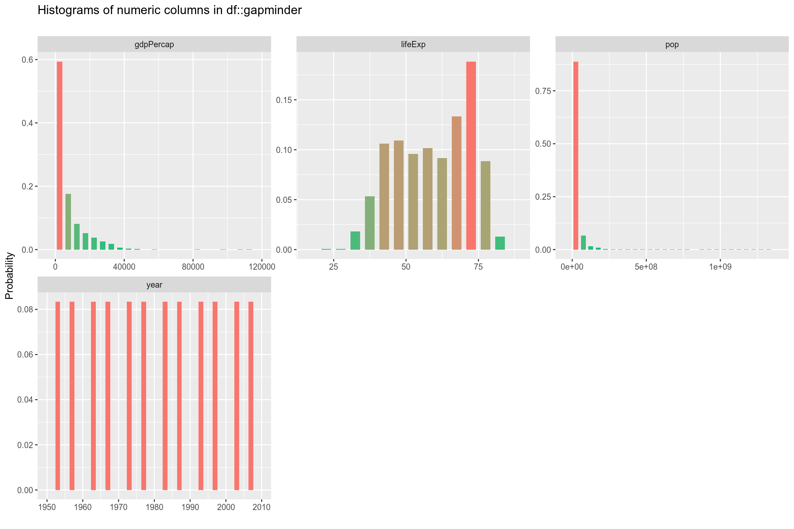
3.1.4.2 Datos perdidos
if (!require('gapminder')) install.packages('gapminder'); library('gapminder')
if (!require('inspectdf')) install.packages('inspectdf'); library('inspectdf')
if (!require('dplyr')) install.packages('dplyr'); library('dplyr')
if (!require('ggplot2')) install.packages('ggplot2'); library('ggplot2')
if (!require('naniar')) install.packages('naniar'); library('naniar')
gapminder %>% inspect_na## # A tibble: 6 x 3
## col_name cnt pcnt
## <chr> <int> <dbl>
## 1 country 0 0
## 2 continent 0 0
## 3 year 0 0
## 4 lifeExp 0 0
## 5 pop 0 0
## 6 gdpPercap 0 0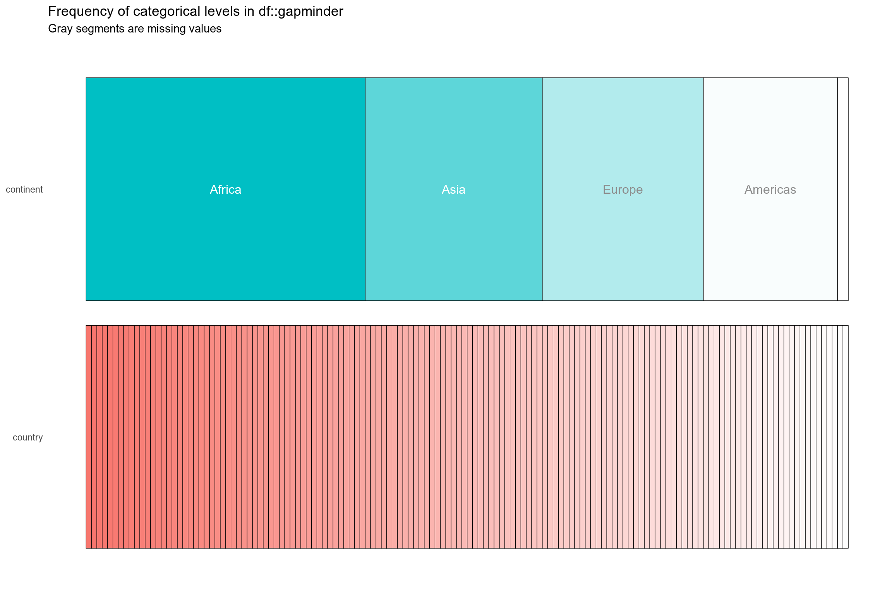
3.2 Covariación
3.2.1 Variable categórica y continua
Podemos contar el numero de elementos por nivel de la variable o ver densidad, etc.
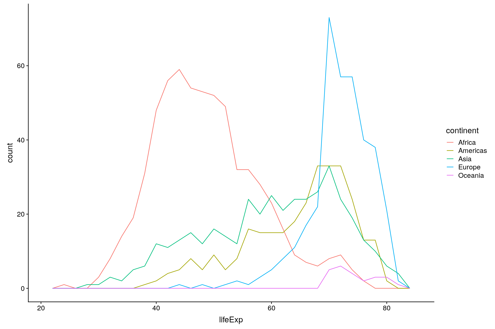
# Lo mismo pero usando stat(count)
ggplot(gapminder, aes(lifeExp, stat(count), colour = continent)) +
geom_freqpoly(binwidth = 2)# En stat() podemos usar combinaciones de funciones
ggplot(gapminder, aes(lifeExp, stat(density/max(density)), colour = continent)) +
geom_freqpoly(binwidth = 2)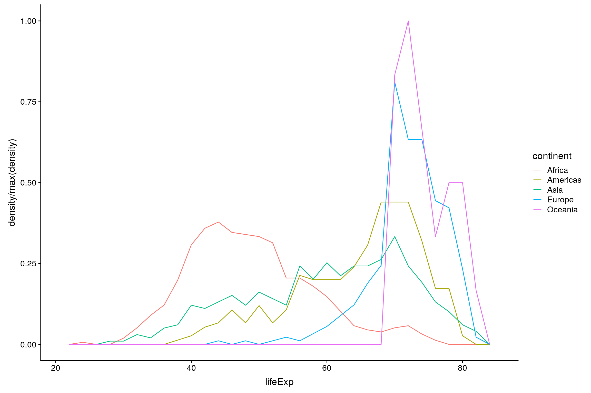
Podemos ver boxplots para cada nivel de la variable categórica:
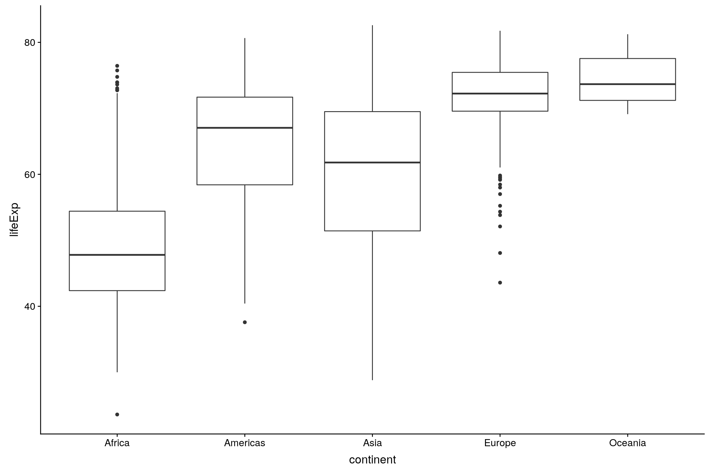
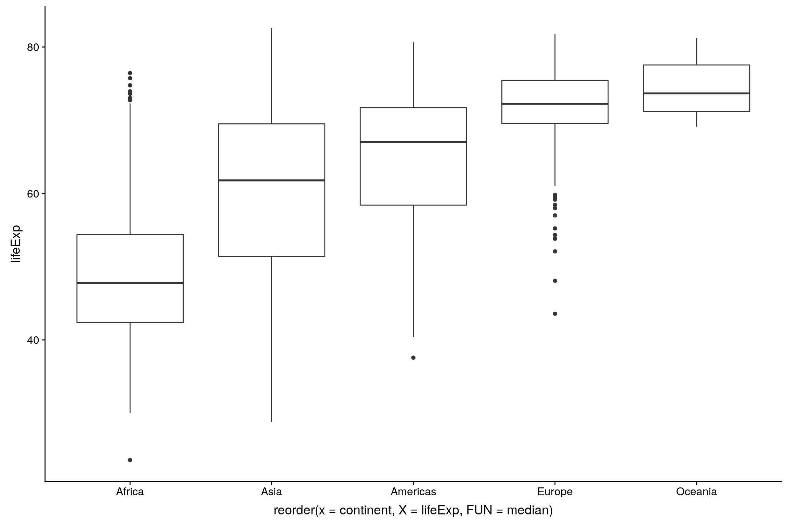
# Que feo ha quedado el titulo del eje x
ggplot(gapminder, aes(reorder(x = continent, X = lifeExp, FUN = median), lifeExp)) +
geom_boxplot() +
labs(x = "Continente")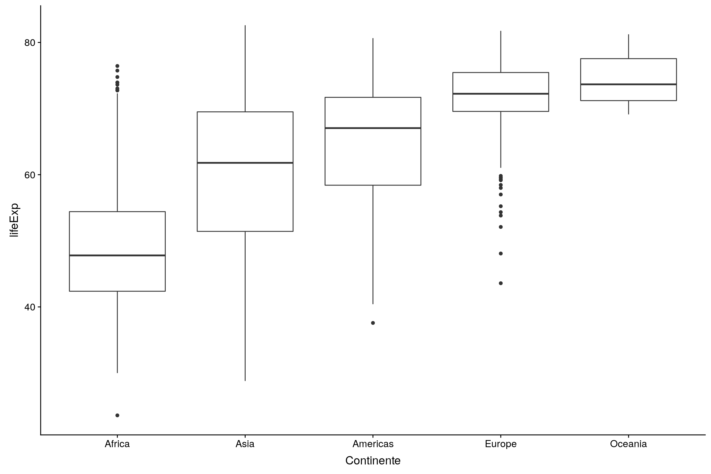
Y podemos usar geom_density_ridges() para combinar puntos con distribuciones:
ggplot(gapminder, aes(lifeExp, continent, fill = continent)) +
ggridges::geom_density_ridges(stat = "binline", bins = 20, scale = 0.95, draw_baseline = FALSE, alpha = .3) +
ggridges::geom_density_ridges(jittered_points = TRUE, position = "raincloud", alpha = 0.5, scale = 0.9)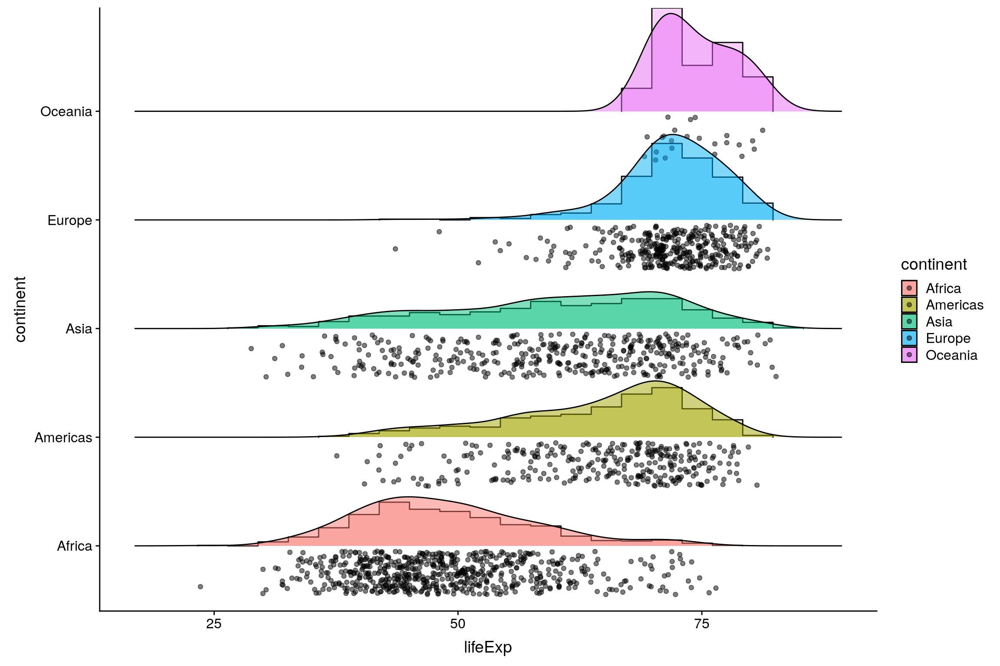
¿Qué estamos viendo exáctamente arriba? Hay un punto por cada pais, y por cada año, lo que da lugar aalgo bien dificil de interpretar. Podemos ver los datos únicamente del último año:
## # A tibble: 12 x 2
## year `n()`
## <int> <int>
## 1 1952 142
## 2 1957 142
## 3 1962 142
## 4 1967 142
## 5 1972 142
## 6 1977 142
## 7 1982 142
## 8 1987 142
## 9 1992 142
## 10 1997 142
## 11 2002 142
## 12 2007 142ggplot(gapminder %>% filter(year == 2007), aes(lifeExp, continent, fill = continent)) +
ggridges::geom_density_ridges(stat = "binline", bins = 20, scale = 0.95, draw_baseline = FALSE, alpha = .3) +
ggridges::geom_density_ridges(jittered_points = TRUE, position = "raincloud", alpha = 0.5, scale = 0.9)
Me pregunto si será muy evidente la diferencia entre los extremos en la base de datos, 1952 y 2007:
A = ggplot(gapminder %>% filter(year == 1952), aes(lifeExp, continent, fill = continent)) +
ggridges::geom_density_ridges(stat = "binline", bins = 20, scale = 0.95, draw_baseline = FALSE, alpha = .3) +
ggridges::geom_density_ridges(jittered_points = TRUE, position = "raincloud", alpha = 0.5, scale = 0.9) +
theme(legend.position = "none") +
ggtitle("1952")
B = ggplot(gapminder %>% filter(year == 2007), aes(lifeExp, continent, fill = continent)) +
ggridges::geom_density_ridges(stat = "binline", bins = 20, scale = 0.95, draw_baseline = FALSE, alpha = .3) +
ggridges::geom_density_ridges(jittered_points = TRUE, position = "raincloud", alpha = 0.5, scale = 0.9) +
theme(legend.position = "none") +
ggtitle("2007")
cowplot::plot_grid(A, B)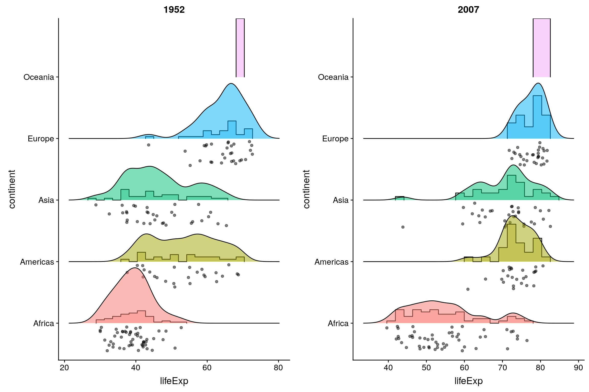
Finalmente, podemos ver el avance por país de una manera más directa:
# METODO 1: Asumimos que el valor máximo corresponde al más actualizado
DF_gapminder_max_min = gapminder %>%
group_by(continent, country) %>%
summarise(lifeExp = max(lifeExp) - min(lifeExp))
ggplot(DF_gapminder_max_min, aes(lifeExp, continent, fill = continent)) +
ggridges::geom_density_ridges(stat = "binline", bins = 20, scale = 0.95, draw_baseline = FALSE, alpha = .3) +
ggridges::geom_density_ridges(jittered_points = TRUE, position = "raincloud", alpha = 0.5, scale = 0.9) +
theme(legend.position = "none") +
ggtitle("Diferencia entre max y min por país")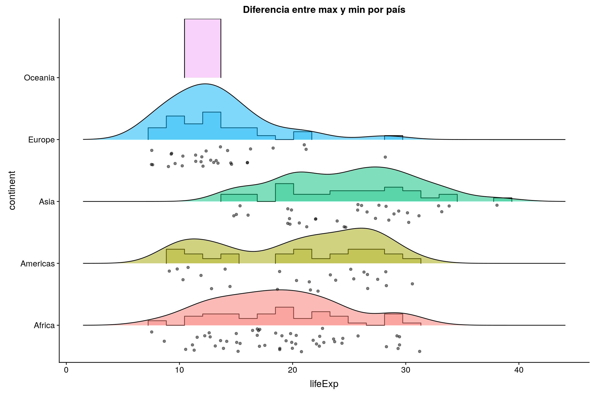
# METODO 2: Calculamos maximo - mínimo para cada país
DF_last_year = gapminder %>% filter(year == max(year)) %>% select(country, continent, lifeExp) %>% rename(lifeExp_max = lifeExp)
DF_first_year = gapminder %>% filter(year == min(year)) %>% select(country, continent, lifeExp) %>% rename(lifeExp_min = lifeExp)
DF_last_first = DF_last_year %>%
full_join(DF_first_year, by = c("country", "continent")) %>%
mutate(DIFF = lifeExp_max - lifeExp_min)
# gather(max_min, value, lifeExp_max:lifeExp_min)
ggplot(DF_last_first, aes(DIFF, continent, fill = continent)) +
ggridges::geom_density_ridges(stat = "binline", bins = 20, scale = 0.95, draw_baseline = FALSE, alpha = .3) +
ggridges::geom_density_ridges(jittered_points = TRUE, position = "raincloud", alpha = 0.5, scale = 0.9) +
theme(legend.position = "none") +
ggtitle("Diferencia entre 2007 y 1952 por pais")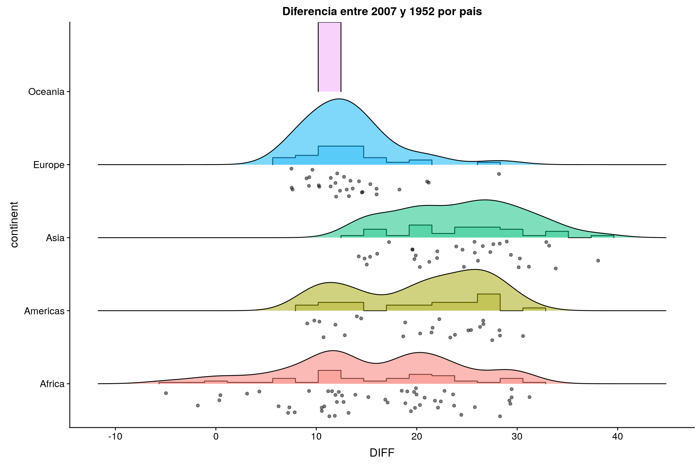
3.2.2 Ejercicio covariacion 1
Mira el plot donde mostramos la diferencia entre los extremos en la base de datos, 1952 y 2007 con dos gráficas, una al lado de la otra. Ves algún problema?
Trata de resolver el problema en las escalas. El resultado final deberia ser:
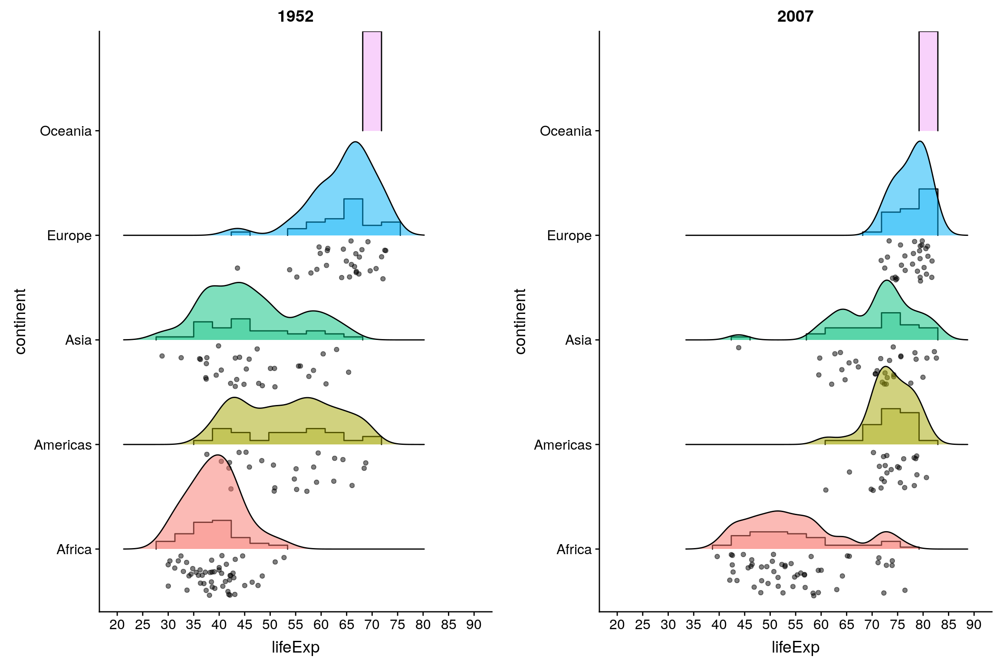
3.2.3 Dos variables categóricas
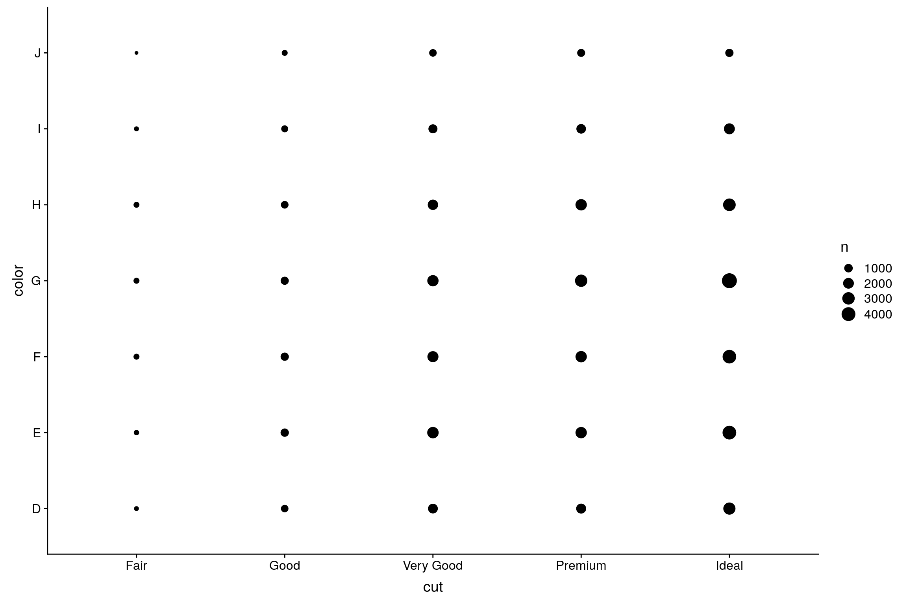
## # A tibble: 35 x 3
## color cut n
## <ord> <ord> <int>
## 1 D Fair 163
## 2 D Good 662
## 3 D Very Good 1513
## 4 D Premium 1603
## 5 D Ideal 2834
## 6 E Fair 224
## 7 E Good 933
## 8 E Very Good 2400
## 9 E Premium 2337
## 10 E Ideal 3903
## # … with 25 more rows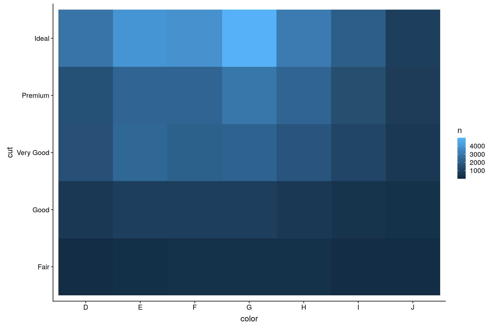
3.2.4 Dos variables continuas
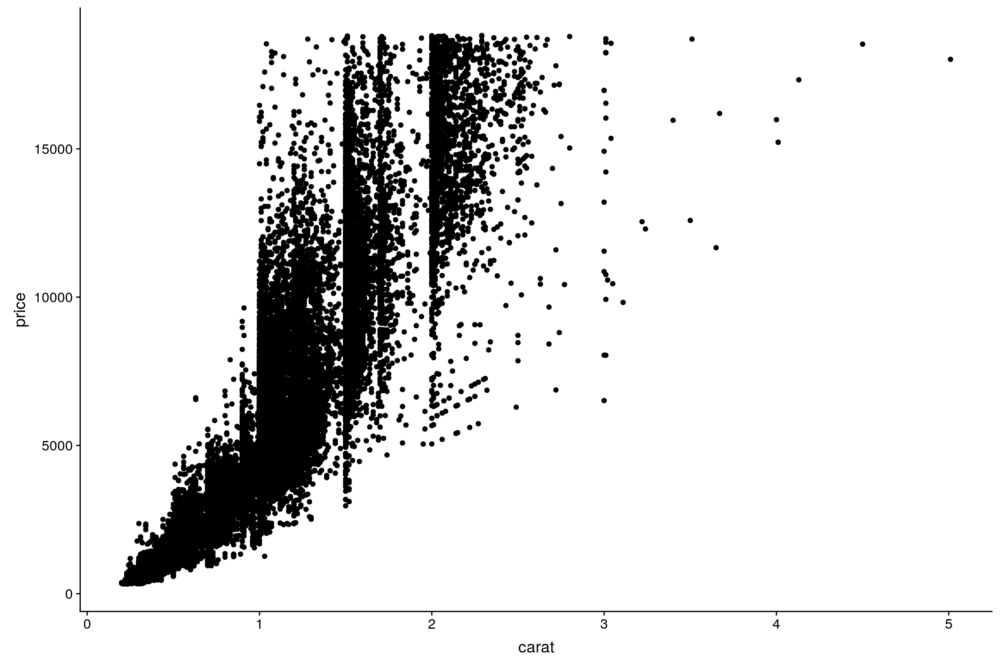
ggplot(gapminder, aes(lifeExp, gdpPercap, color = continent)) +
geom_point(alpha = 1 / 2) +
scale_y_log10()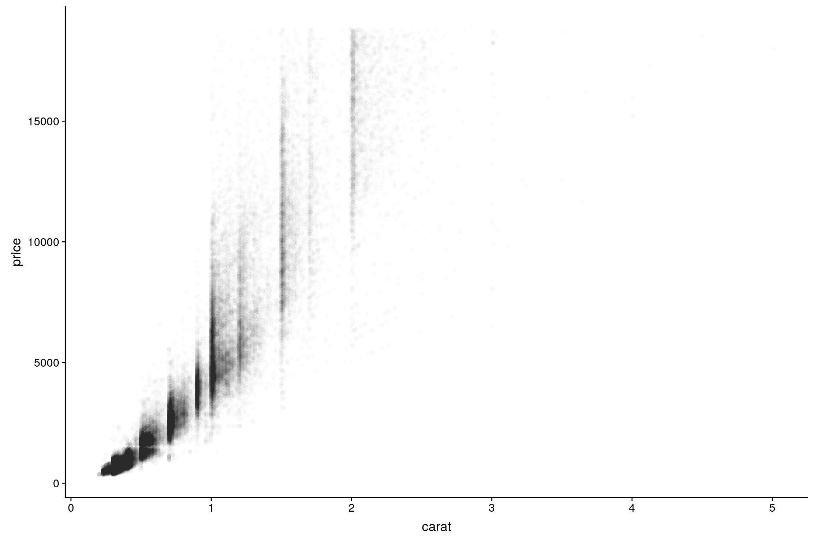
if (!require('hexbin')) install.packages('hexbin'); library('hexbin')
ggplot(gapminder, aes(lifeExp, gdpPercap)) +
geom_hex()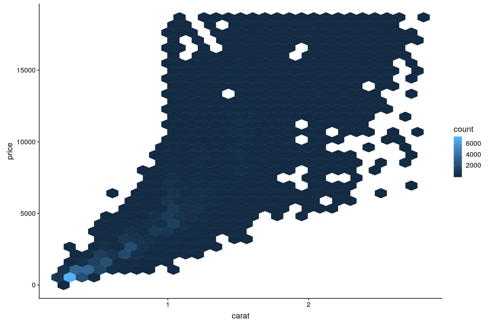
ggplot(gapminder, aes(lifeExp, gdpPercap)) +
geom_boxplot(mapping = aes(group = cut_width(lifeExp, 10))) +
scale_y_log10()
3.2.5 Ejercicio covariación 2
Usando el DF mpg, visualiza la covariación entre:
manufactureryhwy
classyhwy
hwyycty
 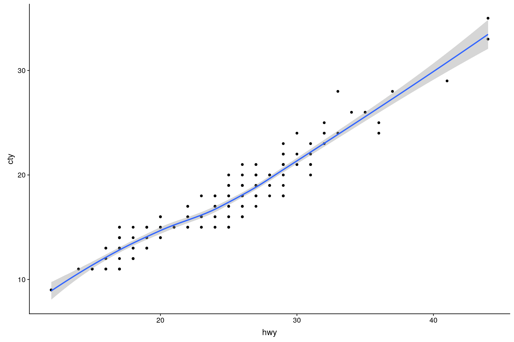
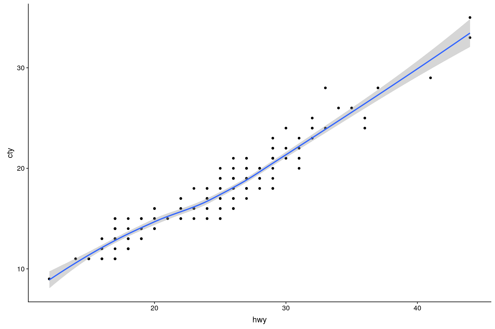
3.3 Ejercicios finales
3.3.1 Ejercicio exploración base nueva
Usando la base del paper Cancer Screening Risk Literacy of Physicians in Training, haz un primer análisis exploratorio que incluya:
- histogramas de todas las variables numéricas y no-numéricas
- scatterplots de la relación entre comprensión y numeracy, y entre comprensión y screenbeliefs
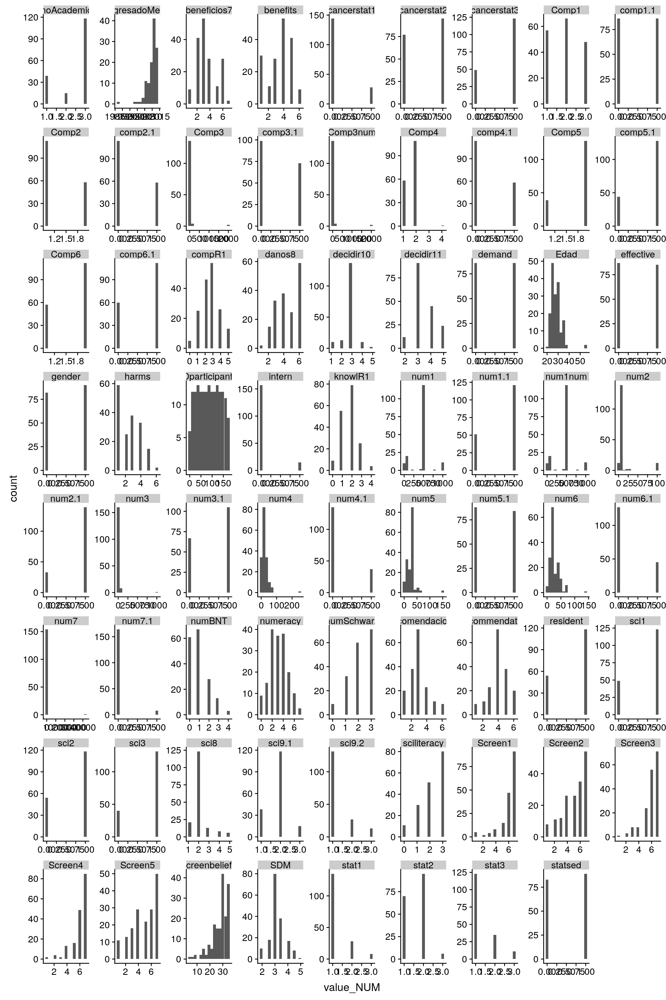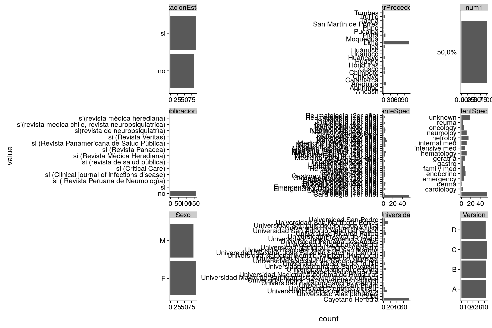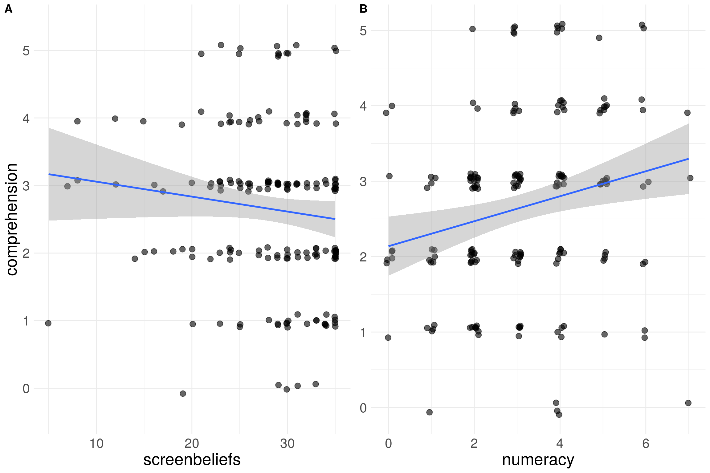
Bibliografía
Wickham, H., & Grolemund, G. (2016). R for data science: import, tidy, transform, visualize, and model data. O’Reilly Media, Inc. https://r4ds.had.co.nz/